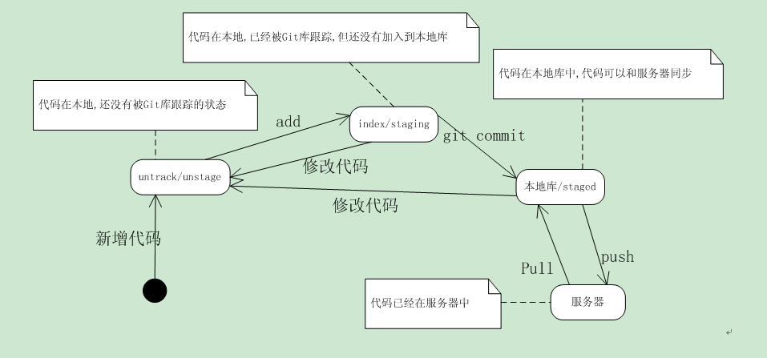

git常规使用
我们做项目的时候就会用到git 帮我们管理、合作开发、版本管理
这里主要包括：
- Git 基础知识与常用指令
- Git 项目中主要使用指令
Git 基础知识与常用指令
一、Git代码状态转换图

其中：
- 未被Git跟踪的状态为unstage状态；
- 已被Git跟踪的状态为stage状态（stage：阶段），因此包括staging状态和staged状态。
untrack files：是指尚未被git所管理的文件；changed but not updated：是指文件被git管理，并且发生了改变，但改动还没被git管理；这两种状态，都可以看成是改动还没被git管理的状态，我们这里称unstage状态。 staging是commit和未管理之间的一个状态，也有别名叫index状态，也就是git已经管理了这些改动，但是还没完成提交。changes to be commited是指进入staged状态的文件。 .gitignore中的文件，不会出现在以上三个状态中。 注：
- 这个图也解释了为啥从远端库拉代码，不需要add、commit。
- 代码一旦修改，就会成为未被git库跟踪的状态。需要add、commit。
二、大白话Git
1、Git 管理代码，保证代码版本迭代连续性，即：向A分支merge或者push代码时，A分支代码必须是当前代码的上一个版本，不然会产生冲突。（换句话说：Git确保当前的本地的代码为最新）
2、Git有修改就有提交，就有新的代码版本，git管理维护的是修改。
3、Git分支存储的是代码副本。
4、push ：实际上就是将本地分支合并到远端库分支；pull：实际就是将远端分支合并到本地分支。
三、Git本地常用操作指令
1、创建git库
git init #在当前目录中生成一个.git 目录（含有.git目录的目录即是git仓库）
2、注册git用户
--->用于在团队合作开发中，表明代码作者。
git config --global user.name XXX #用户名
git config --global user.email XXX #用户邮箱
git config --list #查看用户信息
注：加--global，全局设置。
3、向git库添加修改
git add [path］ #会把对应目录或文件，添加到stage状态
git add . #会把当前所有的untrack files和changed but not updated添加到stage状态
实际上是为修改内容添加index索引。
4、向版本库提交修改
git commit –m “XXXX” #提交修改,添加注释
注：git 提示： 未有add红色字体，未有commit绿色字体，已提交则worktree是干净的
5、查看当前代码库的状态
git status
6、查看版本信息
--->实际是查看修改提交信息
git log
git log --graph #以图形化（节点）展示当前git库的提交信息。
7、查看指定版本信息
git show sdjf974654dd…. #(show后面为每次提交系统自动生成的一串哈希值)
git show sdji97 #一般只使用版本号的前几个字符即可
8、撤销修改
git reset
（1）撤销整体修改
git reset --hard #
回到原来编辑的地方,改动会丢失。（同样适用于团队对于其他人的修改恢复）
git reset --hard sdv143kvf…...
可回到指定的版本#(hard后面为每次提交系统自动生成的一串哈希值)
git reset [path]
会改变path指定的文件或目录的stage状态，到非stage状态。 git reset 会将所有stage的文件状态，都改变成非stage状态。
（2）撤销某次修改 回退1个change的写法就是
git reset HEAD^，
2个为HEAD^^，
3个为HEAD~3，以此类推。
9、向远端库推送修改（提交修改）
git push origin 分支名
10、暂存修改
git stash
可以把当前的改动（stage和unstage，但不包括untrack的文件）暂存。
然后通过git stash list查看。
并通过git stash apply重新取出来。但apply之前要保证worktree是干净的。
四、Git团队开发常用操作指令
1、获取远端库项目
git clone/pull
2、团队开发的基本流程（多分支合并一个分支）
git add . #添加改动的文件
git commit #（提交至本地）
git pull --rebase #（将服务器项目与本地项目合并）
git push #（将本地项目上传至远端库）
（在提交前要git pull --rebase 一下，确保当前的本地的代码为最新。）
五、Git 分支管理
1、建立分支
git branch AAA #建立分支AAA
2、分支切换
git checkout AAA #从当前分支切换到AAA分支 (若AAA分支不存在，则自动新建)
3、将分支与主枝master合并
git checkout master #（首先切换回主枝）
git merge AAA #（将分支AAA与主枝合并）
注：git merge：默认情况下，Git执行"快进式合并"（fast-farward merge），会直接将Master分支指向Develop分支。 使用--no-ff参数后，会执行正常合并，在Master分支上生成一个新节点。为了保证版本演进的清晰（保持提交曲线为直线），建议采用这种方法。
4、当前分支查看
git branch #默认有master（也称为主枝）
git branch -r #查看远端库分支
git branch –a #查看当前所有分支（包括本地分支和远端库分支）
5、删除分支
git branch –d AAA #删除分支AAA
6、切下远端库A分支到本地库A分支
git checkout -b A origin/A （若本地A分支不存在，则自动新建）
注：上面只是一些基本的操作命令，更多的命令可通过帮助文档查询。 帮助文档的使用： man git-<需查询的指令> #（git后面有“-”） 如commit的查询为 man git-commit
六、本地代码上传Github
1、Gtthub上建立远端仓库，复制下载链接。
2、本地指定目录下，Gitbash粘贴远端仓库下载链接拉取远端仓库代码。
3、复制本地需要提交的代码到远端仓库目录。
3、Git add、commit、push 提交本地代码至Github远端仓库。
参考文档：
https://www.cnblogs.com/chiao/archive/2011/07/27/2117835.html
Git 项目中主要使用指令
- git branch // 查看分支
- git checkout branchName // 切换到指定的分支
- git add . // 添加文件到版本库（只是添加到缓存区），.代表添加文件夹下所有文件
- git commit -m "xxx" //把添加的文件提交到版本库，并填写提交备注
- git merge branchName // 合并目标分支
- git remote add origin 你的远程库地址 // 把本地库与远程库关联
- git push -u origin master // 第一次推送时
- git push origin master // 第一次推送后，直接使用该命令即可推送修改
注意：每次修改代码后，在推送或者切换分支前 一定要 git add . 和 git commit -m ""